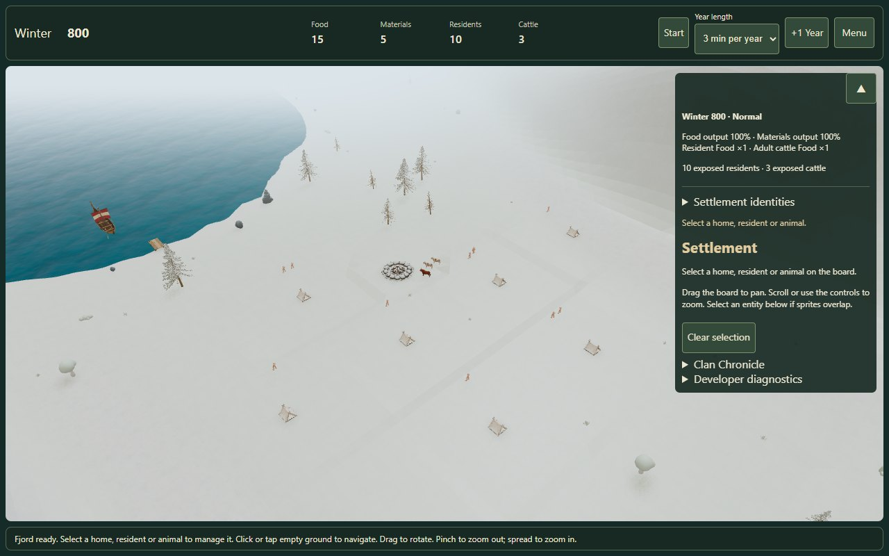
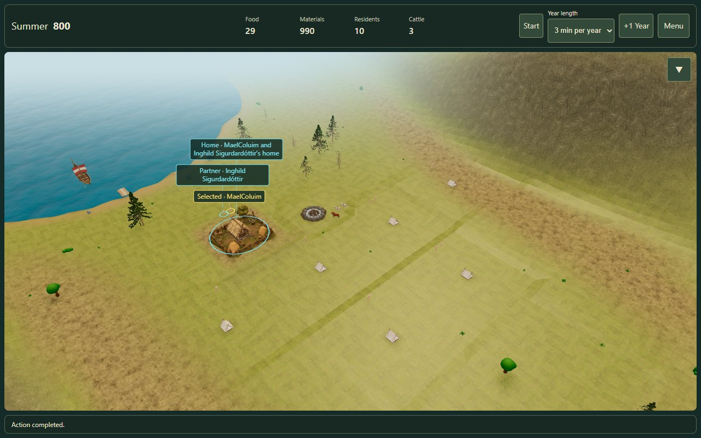
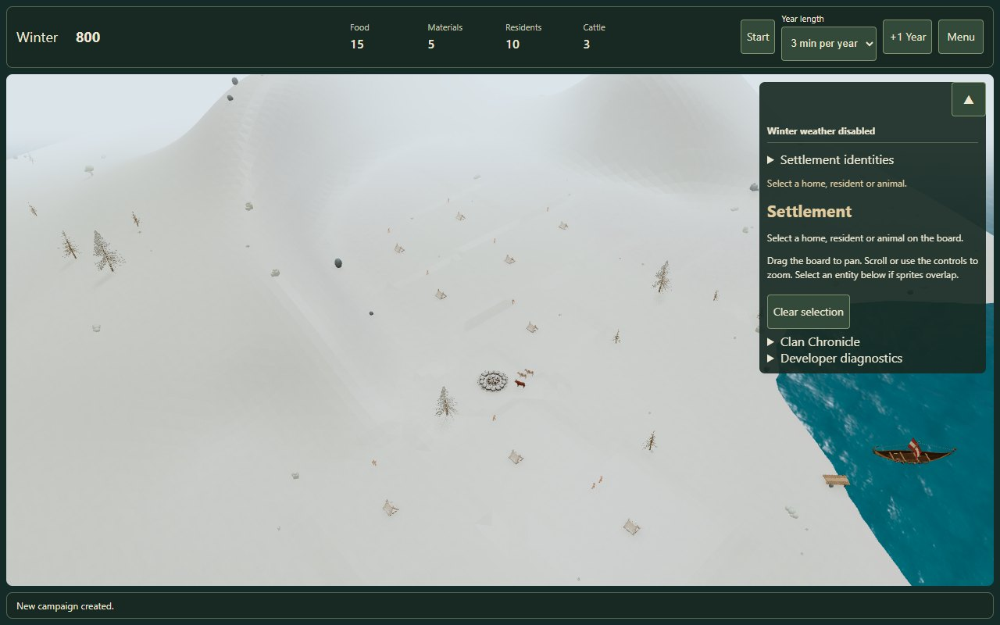
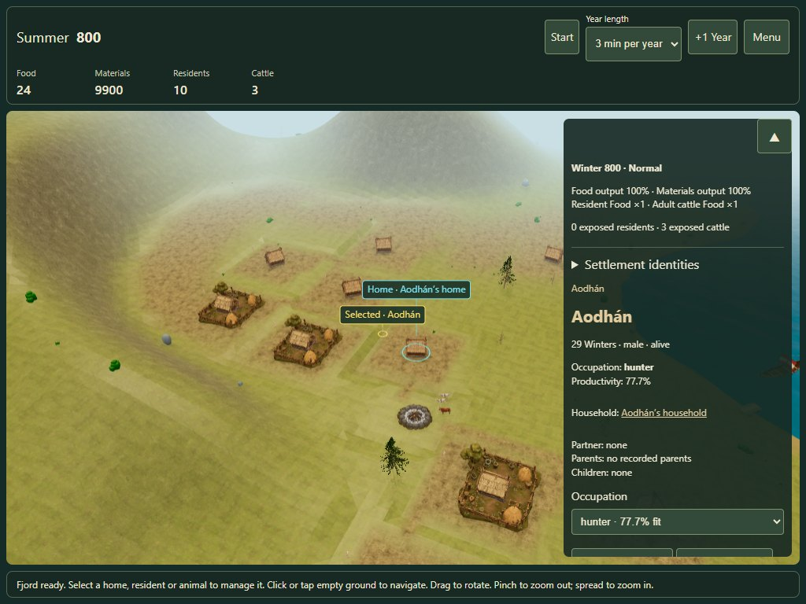

Open Fjord settlement · QA report · Measurements
New islands, existing campaign
The campaign seed selects one of two validated geography seeds. The newer generator, zoning and materials now feed the live gameplay route. Existing saves retain their original world. Choose Menu → Campaign → New campaign from seed to start on an island.
32 → island 18 · 12 plots33 → island 7 · 13 plotsGrading ≤ 0.6 mCompact recipe saves
Island 18 · founding Winter

Desktop 1280 × 800. The existing campfire, tents, residents and ship use the prepared canonical island.
Island 18 · Summer and a built Farmyard

A house was built and its resident assigned farmer through the actual controls. The same prepared ground supports the model, selection and family markers.
Island 7 · a second campaign

Campaign seed 33 selects geography 7. The Core keeps seed 33; the geography recipe is saved separately.
Island 7 · ten households and touch selection

Edge touch emulation, 1024 × 768. Rotation, pinch/spread and resident picking passed. This does not certify physical iPad Safari.
Local foundation terraces are visible in Summer, especially on empty plots. Capacity is finite. Cold generation took about 24–28 seconds during concurrent local checks; these timings are not a frame-time benchmark. Discovery fog and a visible rival clan are separate future work.